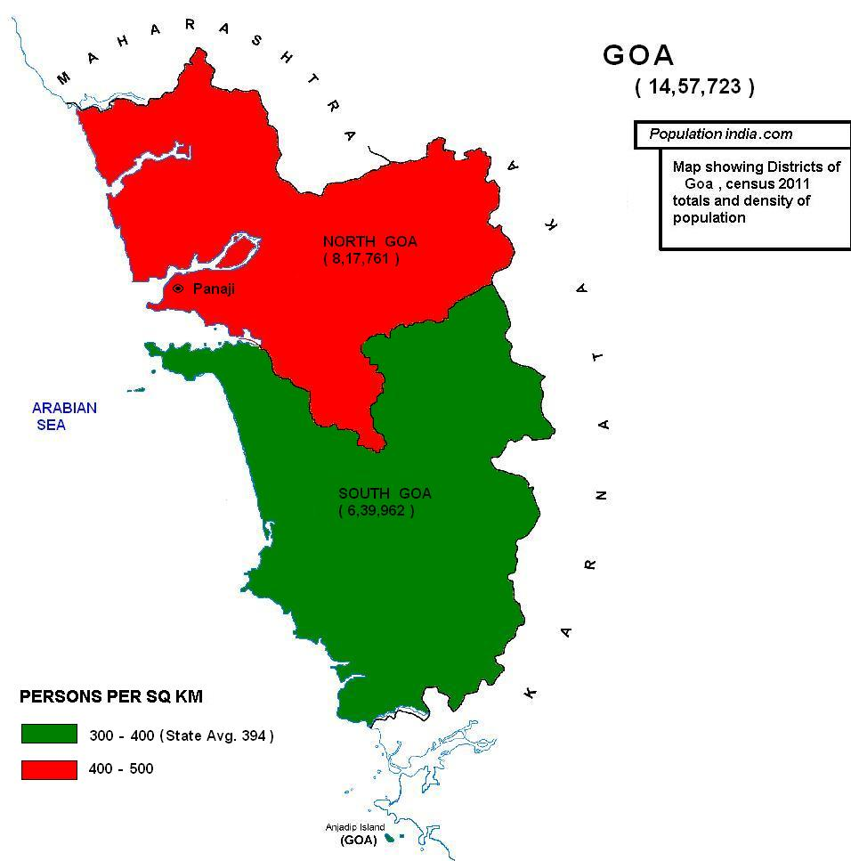

DEMOGRAPHICS
A native of Goa is called a Goan. As per projection, population of Goa in 2021 is 15.28 Lakhs, making it India's fourth smallest (after Sikkim, Mizoram and Arunachal Pradesh).
There are currently 394 people for each square kilometre of land which is higher than national average 382 per km2. Goa is the state with highest proportion of urban population
with 49.8% of the population living in urban areas. The sex ratio is 956 females to 1,000 males. The birth rate is 12.4 per 1,000 people in 2018. Goa also is the state with
lowest proportion of Scheduled Tribes at 0.04%. Estimates put the migrant, or non-Goan Indian origin, population at over 40% of the resident population, Goa is virtually standing
on the brink of 'ethnic dilution' as unrestricted migration from other states is threatening to reduce the native population to an 'alienated microscopic minority' by 2021, according
to an assessment by the state government.
